התרגילים לפי שריר
260 תרגילים במאגר. תרגיל מופיע תחת כל שריר שרשום לו, כמו במסך "בחר תרגיל". קודם התרגילים שהשריר הוא הראשי שלהם, אחריהם (באפור) אלה שהוא משני בהם. 109 תרגילים עם הדגמה.
חזה 30מעוינים וטרפז אמצעי 19רחב גבי 15טרפז עליון 6כתפיים 28יד קדמית 16יד אחורית 20אמה 5ארבע ראשי 24ירך אחורית 15ישבן 21מקרבים 4מרחיקים 5שוקיים 6בטן 24אלכסונים 11זוקפי גב 8אירובי 15
 חזה30 · 28 ראשי · 2 משני · 17 עם הדגמה
חזה30 · 28 ראשי · 2 משני · 17 עם הדגמה
- x1לחיצת חזה במוטBarbell Bench Pressהדגמה
- x2לחיצת חזה במשקולותDumbbell Bench Pressהדגמה
- x3לחיצת חזה בשיפוע חיוביIncline Bench Press
- x4לחיצת חזה בשיפוע חיובי במשקולותIncline Dumbbell Press
- x5לחיצת חזה בשיפוע שליליDecline Bench Press
- x6לחיצת חזה בשיפוע שלילי במשקולותDecline Dumbbell Pressהדגמה
- x7לחיצת חזה במכונהChest Press Machineהדגמה
- x8לחיצת חזה בשיפוע במכונהIncline Chest Press Machineהדגמה
- x9לחיצת חזה בסמית׳Smith Machine Bench Press
- x10לחיצת חזה על הרצפהFloor Pressהדגמה
- x11לחיצת חזה על הרצפה במשקולותDumbbell Floor Press
- x12פרפר במשקולותDumbbell Flyהדגמה
- x13פרפר בשיפוע במשקולותIncline Dumbbell Flyהדגמה
- x14פרפר בפוליCable Crossover
- x15פרפר בפולי מלמטה למעלהLow to High Cable Fly
- x16פרפר בפולי מלמעלה למטהHigh to Low Cable Fly
- x17פרפר במכונהPec Deckהדגמה
- x18שכיבות סמיכהPush Upsהדגמה
- x19שכיבות סמיכה בשיפועIncline Push Upsהדגמה
- x20שכיבות סמיכה בשיפוע שליליDecline Push Upsהדגמה
- x21שכיבות סמיכה רחבותWide Push Ups
- x22מקביליםDips
- x23מקבילים במשקלWeighted Dips
- x26לחיצת פלטהSvend Pressהדגמה
- x237לחיצת חזה בשיפוע בסמית׳Smith Machine Incline Bench Pressהדגמה
- x241שכיבות סמיכה על הברכייםKnee Push Ups
- x242שכיבות סמיכה מול הקירWall Push Ups
- x248שכיבות סמיכה על כדור כוחMedicine Ball Push Upsהדגמה
- x24פולאוברDumbbell Pulloverהדגמהראשי: רחב גבי
- x236לחיצה צמודה בשיפוע במשקולותClose-Grip Incline Dumbbell Pressהדגמהראשי: יד אחורית
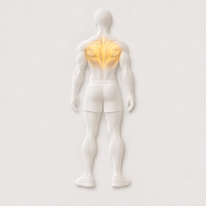
מעוינים וטרפז אמצעי19 · 19 ראשי · 0 משני · 7 עם הדגמה- x41חתירה במוטBarbell Rowהדגמה
- x42חתירה במוט אחיזה תחתונהReverse Grip Barbell Rowהדגמה
- x43חתירת פנדלייPendlay Row
- x44חתירה במשקולת ידDumbbell Rowהדגמה
- x45חתירה בשתי משקולותTwo Arm Dumbbell Row
- x46חתירה בתמיכת חזהChest Supported Row
- x47חתירת סילSeal Row
- x48חתירה בפולי בישיבהSeated Cable Rowהדגמה
- x49חתירה בפולי ביד אחתSingle Arm Cable Row
- x50חתירה בפולי אחיזה רחבהWide Grip Cable Row
- x51חתירה במכונהMachine Rowהדגמה
- x52חתירה גבוהה במכונהMachine High Row
- x53חתירת TT-Bar Rowהדגמה
- x54חתירת לנדמייןLandmine Row
- x55חתירה הפוכהInverted Rowהדגמה
- x56חתירה ברצועותTRX Row
- x256חתירה במשקולות בשכיבה על ספסל משופעChest Supported Dumbbell Row
- x257חתירה ביד אחת בגומייה בישיבהBand Seated One Arm Row
- x258חתירה בפולי תחתון בהטיהCable Bent Over Row
 רחב גבי15 · 15 ראשי · 0 משני · 5 עם הדגמה
רחב גבי15 · 15 ראשי · 0 משני · 5 עם הדגמה
- x24פולאוברDumbbell Pulloverהדגמה
- x27מתחPull Upsהדגמה
- x28מתח אחיזה תחתונהChin Ups
- x29מתח אחיזה רחבהWide Grip Pull Ups
- x30מתח אחיזה ניטרליתNeutral Grip Pull Ups
- x31מתח במשקלWeighted Pull Ups
- x32מתח בסיוע גומייהAssisted Pull Ups
- x33מתח במכונת סיועAssisted Pull Up Machine
- x34פולי עליוןLat Pulldownהדגמה
- x35פולי עליון אחיזה צרהClose Grip Pulldown
- x36פולי עליון אחיזה רחבהWide Grip Lat Pulldown
- x37פולי עליון אחיזה תחתונהReverse Grip Pulldown
- x38פולי עליון ביד אחתSingle Arm Lat Pulldown
- x39משיכת פולי בזרוע ישרהStraight Arm Pulldownהדגמה
- x40משיכת גב במכונהLat Pulldown Machineהדגמה
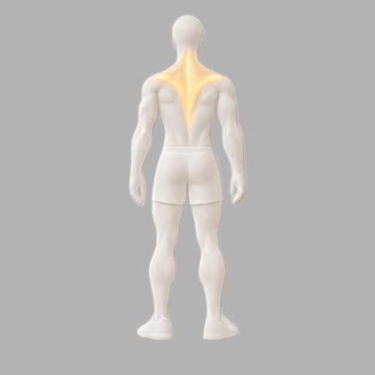
טרפז עליון6 · 6 ראשי · 0 משני · 3 עם הדגמה- x60משיכת כתפיים במשקולותDumbbell Shrugsהדגמה
- x61משיכת כתפיים במוטBarbell Shrugsהדגמה
- x62משיכת כתפיים בפוליCable Shrugs
- x63משיכת כתפיים במכונהMachine Shrugsהדגמה
- x64הרמת YY Raise
- x233משיכת כתפיים בגומייהResistance Band Shrug
 כתפיים28 · 28 ראשי · 0 משני · 12 עם הדגמה
כתפיים28 · 28 ראשי · 0 משני · 12 עם הדגמה
- x25לחיצת לנדמייןLandmine Press
- x71לחיצת כתפיים במוטOverhead Pressהדגמה
- x72לחיצת כתפיים במשקולותDumbbell Shoulder Pressהדגמה
- x73לחיצת כתפיים בישיבהSeated Dumbbell Press
- x74לחיצת כתפיים במכונהMachine Shoulder Pressהדגמה
- x75לחיצת כתפיים בסמית׳Smith Machine Shoulder Press
- x76לחיצת ארנולדArnold Pressהדגמה
- x77פוש פרסPush Press
- x78הרחקת כתףLateral Raiseהדגמה
- x79הרחקת כתף בפוליCable Lateral Raiseהדגמה
- x80הרחקת כתף במכונהMachine Lateral Raise
- x81הרחקת כתף בהטיהLeaning Cable Lateral Raise
- x82הרמה קדמיתFront Raiseהדגמה
- x83הרמה קדמית בפלטהPlate Front Raiseהדגמה
- x84הרמה קדמית בפוליCable Front Raiseהדגמה
- x85פרפר הפוךRear Delt Flyהדגמה
- x86פרפר הפוך במכונהReverse Pec Deckהדגמה
- x87פרפר הפוך בפוליCable Rear Delt Fly
- x88פייס פולFace Pullהדגמה
- x89חתירה אנכיתUpright Row
- x90חתירה אנכית בפוליCable Upright Row
- x91פתיחת גומייהBand Pull Apart
- x92סיבוב חיצוני של הכתףShoulder External Rotation
- x93לחיצת כתפיים בעמידת ידייםHandstand Push Up
- x225קלין אנד פרסClean and Press
- x227ת׳ראסטרThruster
- x228סנאץ׳Snatch
- x243שכיבות סמיכה פייקPike Push Ups
 יד קדמית16 · 16 ראשי · 0 משני · 10 עם הדגמה
יד קדמית16 · 16 ראשי · 0 משני · 10 עם הדגמה
- x94כפיפת מרפק במוטBarbell Curlהדגמה
- x95כפיפת מרפק במוט EZEZ Bar Curlהדגמה
- x96כפיפת מרפק במשקולותDumbbell Curlהדגמה
- x97כפיפת פטישHammer Curlהדגמה
- x98כפיפת פטיש בחבלRope Hammer Curl
- x99כפיפה בסקוטPreacher Curl
- x100כפיפת מרפק בפוליCable Curlהדגמה
- x101כפיפת מרפק בפולי מאחורBayesian Curl
- x102כפיפת ריכוזConcentration Curlהדגמה
- x103כפיפת מרפק בשיפועIncline Curlהדגמה
- x104כפיפת עכבישSpider Curlהדגמה
- x105כפיפת מרפק הפוכהReverse Curl
- x106כפיפת זוטמןZottman Curlהדגמה
- x107כפיפת מרפק במכונהMachine Curl
- x232כפיפת מרפק בגומייהResistance Band Curl
- x245כפיפת מרפק בפולי על ספסל משופעIncline Bench Cable Curlהדגמה
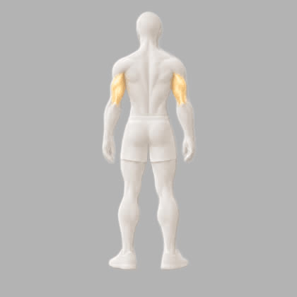
יד אחורית20 · 19 ראשי · 1 משני · 9 עם הדגמה- x108פשיטת מרפק בפוליTricep Pushdownהדגמה
- x109פשיטת מרפק בחבלRope Pushdownהדגמה
- x110פשיטת מרפק בפולי ביד אחתSingle Arm Pushdown
- x111פשיטת מרפק בפולי אחיזה תחתונהReverse Grip Pushdown
- x112סקאל קראשרSkull Crushersהדגמה
- x113סקאל קראשר במשקולותDumbbell Skull Crusher
- x114פשיטת מרפק מעל הראשOverhead Tricep Extensionהדגמה
- x115פשיטת מרפק מעל הראש בחבלOverhead Rope Extensionהדגמה
- x116לחיצת חזה אחיזה צרהClose Grip Bench Press
- x117מקבילים לטרייספסTricep Dips
- x118מקבילים על ספסלBench Dips
- x119בעיטת טרייספסTricep Kickback
- x120בעיטת טרייספס בפוליCable Kickback
- x121שכיבות סמיכה יהלוםDiamond Push Upsהדגמה
- x122פשיטת מרפק במכונהMachine Tricep Extension
- x236לחיצה צמודה בשיפוע במשקולותClose-Grip Incline Dumbbell Pressהדגמה
- x244פשיטת מרפק מעל הראש בפולי תחתוןLow Cable Overhead Tricep Extensionהדגמה
- x249פשיטת מרפק מעל הראש במוט EZ בישיבהSeated EZ-Bar Overhead Tricep Extensionהדגמה
- x250פרנץ׳ פרס בשכיבה במוטLying Barbell French Press
- x243שכיבות סמיכה פייקPike Push Upsראשי: כתפיים
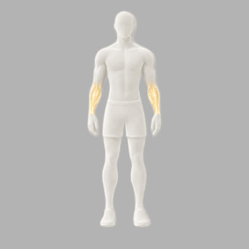
אמה5 · 5 ראשי · 0 משני · 2 עם הדגמה- x123כפיפת שורש כף ידWrist Curlהדגמה
- x124פשיטת שורש כף ידReverse Wrist Curlהדגמה
- x125גלגלת אמותWrist Roller
- x126אחיזת חוואיFarmers Carry
- x127תלייה על המוטDead Hang
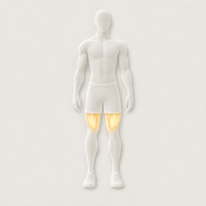
ארבע ראשי24 · 24 ראשי · 0 משני · 10 עם הדגמה- x128סקוואטBarbell Squatהדגמה
- x129סקוואט קדמיFront Squatהדגמה
- x130סקוואט גובלטGoblet Squatהדגמה
- x131סקוואט משקל גוףBodyweight Squatהדגמה
- x132סקוואט בסמית׳Smith Machine Squat
- x133סקוואט לקופסהBox Squat
- x134סקוואט עם עצירהPause Squat
- x135לחיצת רגלייםLeg Pressהדגמה
- x136לחיצת רגליים ברגל אחתSingle Leg Press
- x137האק סקוואטHack Squat
- x138סקוואט מטוטלתPendulum Squat
- x139סקוואט בחגורהBelt Squat
- x140פשיטת ברךLeg Extensionהדגמה
- x141לאנג׳Lunges
- x142לאנג׳ בהליכהWalking Lungesהדגמה
- x143לאנג׳ לאחורReverse Lunge
- x144סקוואט בולגריBulgarian Split Squat
- x145עליות מדרגהStep Upsהדגמה
- x146ירידות מדרגהStep Downs
- x147סקוואט סיסיSissy Squat
- x148ישיבת קירWall Sit
- x229לאנג׳ במשקל גוףBodyweight Lungeהדגמה
- x230לאנג׳ בסמית׳Smith Machine Lungeהדגמה
- x231לאנג׳ במוטBarbell Lunge
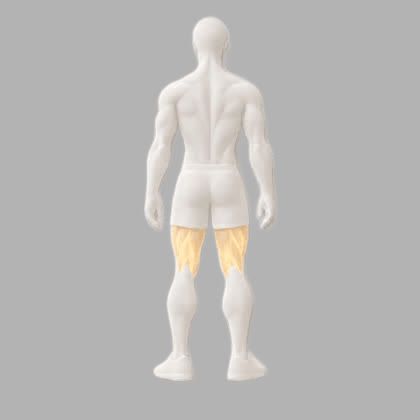
ירך אחורית15 · 12 ראשי · 3 משני · 8 עם הדגמה- x57דדליפטDeadliftהדגמה
- x58דדליפט במוט טרפזTrap Bar Deadlift
- x149דדליפט רומניRomanian Deadliftהדגמה
- x150דדליפט רומני במשקולותDumbbell Romanian Deadliftהדגמה
- x151דדליפט רגל ישרהStiff Leg Deadlift
- x152דדליפט על רגל אחתSingle Leg Romanian Deadlift
- x153כפיפת ברך בשכיבהLying Leg Curlהדגמה
- x154כפיפת ברך בישיבהSeated Leg Curl
- x155כפיפת ברך בעמידהStanding Leg Curl
- x156כפיפה נורדיתNordic Curl
- x157הרמת ירך אחוריתGlute Ham Raise
- x246כפיפת ברך בשכיבה עם משקולתDumbbell Lying Leg Curlהדגמה
- x239גשר ישבן עם משקולתDumbbell Glute Bridgeהדגמהראשי: ישבן
- x240היפ ת׳ראסט ברגל אחת עם משקולתSingle-Leg Dumbbell Hip Thrustהדגמהראשי: ישבן
- x251היפ ת׳ראסט בסמית׳Smith Machine Hip Thrustהדגמהראשי: ישבן
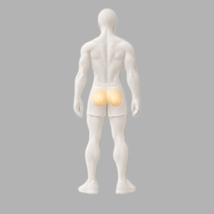
ישבן21 · 16 ראשי · 5 משני · 9 עם הדגמה- x158משיכה בין הרגלייםCable Pull Through
- x159היפ ת׳ראסטHip Thrust
- x160היפ ת׳ראסט במכונהMachine Hip Thrust
- x161היפ ת׳ראסט ברגל אחתSingle Leg Hip Thrust
- x162גשר ישבןGlute Bridgeהדגמה
- x163דדליפט סומוSumo Deadlift
- x164סקוואט סומוSumo Squatהדגמה
- x165בעיטת ישבן בפוליCable Glute Kickbackהדגמה
- x166בעיטת ישבן במכונהMachine Glute Kickback
- x167סווינג קטלבלKettlebell Swing
- x168הליכה צידית בגומייהBanded Lateral Walk
- x169צדפהClamshell
- x226פאוור קליןPower Clean
- x239גשר ישבן עם משקולתDumbbell Glute Bridgeהדגמה
- x240היפ ת׳ראסט ברגל אחת עם משקולתSingle-Leg Dumbbell Hip Thrustהדגמה
- x251היפ ת׳ראסט בסמית׳Smith Machine Hip Thrustהדגמה
- x229לאנג׳ במשקל גוףBodyweight Lungeהדגמהראשי: ארבע ראשי
- x230לאנג׳ בסמית׳Smith Machine Lungeהדגמהראשי: ארבע ראשי
- x231לאנג׳ במוטBarbell Lungeראשי: ארבע ראשי
- x234הרחקת ירך בשכיבה על הצדSide-Lying Hip Abductionהדגמהראשי: מרחיקים
- x235הרחקת ירך בגומייהBanded Hip Abductionראשי: מרחיקים
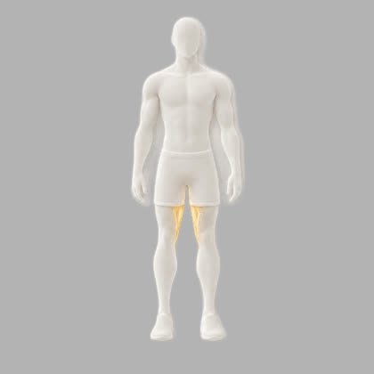
מקרבים4 · 4 ראשי · 0 משני · 1 עם הדגמה- x170קירוב ירך במכונהHip Adduction Machine
- x171קירוב ירך בפוליCable Hip Adduction
- x172פלאנק קופנהגןCopenhagen Plank
- x173סקוואט קוזאקCossack Squatהדגמה
 מרחיקים5 · 4 ראשי · 1 משני · 2 עם הדגמה
מרחיקים5 · 4 ראשי · 1 משני · 2 עם הדגמה
- x174הרחקת ירך במכונהHip Abduction Machine
- x175הרחקת ירך בפוליCable Hip Abduction
- x234הרחקת ירך בשכיבה על הצדSide-Lying Hip Abductionהדגמה
- x235הרחקת ירך בגומייהBanded Hip Abduction
- x260הרמת רגל בפלאנק צידי על הברכייםSide Plank Bent Leg Liftהדגמהראשי: אלכסונים
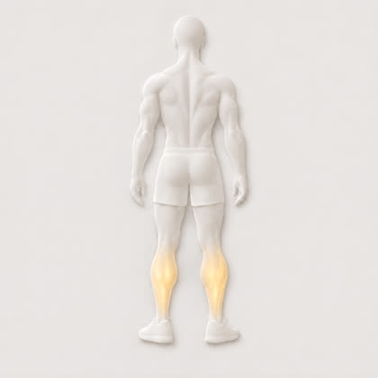
שוקיים6 · 6 ראשי · 0 משני · 2 עם הדגמה- x176הרמת עקבים בעמידהStanding Calf Raiseהדגמה
- x177הרמת עקבים בישיבהSeated Calf Raise
- x178הרמת עקבים בלחיצת רגלייםLeg Press Calf Raise
- x179הרמת עקבים ברגל אחתSingle Leg Calf Raiseהדגמה
- x180הרמת עקבים בסמית׳Smith Machine Calf Raise
- x181הרמת קדמת השוקTibialis Raise
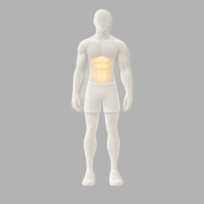
בטן24 · 24 ראשי · 0 משני · 11 עם הדגמה- x182כפיפות בטןCrunches
- x183כפיפות בטן בפוליCable Crunchהדגמה
- x184כפיפות בטן במכונהMachine Crunch
- x185כפיפות בטן הפוכותReverse Crunch
- x186סיטאפSit Ups
- x187סיטאפ בשיפוע שליליDecline Sit Upsהדגמה
- x188הרמת רגליים בתלייהHanging Leg Raise
- x189הרמת ברכיים בתלייהHanging Knee Raiseהדגמה
- x190הרמת רגליים בשכיבהLying Leg Raiseהדגמה
- x191רגליים למוטToes to Bar
- x192פלאנקPlankהדגמה
- x193פלאנק עם משקלWeighted Plank
- x194גלגל בטןAb Wheel
- x195טיפוס הריםMountain Climbers
- x196הולו הולדHollow Hold
- x197דד באגDead Bug
- x198וי אפV Upהדגמה
- x199בעיטות רפרוףFlutter Kicksהדגמה
- x200ווקאוםStomach Vacuum
- x201טורקיש גט אפTurkish Get Up
- x238כפיפות בטן עם משקולתDumbbell Reach Crunchהדגמה
- x247קירוב ברכיים לחזה בשכיבהLying Knee Tucksהדגמה
- x252נגיעה בבהונות עם פלטהPlate Toe Touchהדגמה
- x254קירוב ברכיים לחזה בישיבה על ספסלSeated Bench Knee Tucksהדגמה
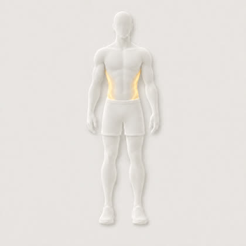
אלכסונים11 · 11 ראשי · 0 משני · 4 עם הדגמה- x202פלאנק צידיSide Plank
- x203טוויסט רוסיRussian Twistהדגמה
- x204כפיפות אופנייםBicycle Crunch
- x205כפיפה צידיתDumbbell Side Bend
- x206לחיצת פאלוףPallof Pressהדגמה
- x207חיתוך עצים בפוליCable Woodchopper
- x208סיבוב לנדמייןLandmine Twist
- x209נשיאת מזוודהSuitcase Carry
- x253כפיפה צידית על ספסל 45°45 Degree Bench Side Bendהדגמה
- x255ירידות אגן בפלאנק צידיSide Plank Hip Dips
- x260הרמת רגל בפלאנק צידי על הברכייםSide Plank Bent Leg Liftהדגמה
 זוקפי גב8 · 8 ראשי · 0 משני · 4 עם הדגמה
זוקפי גב8 · 8 ראשי · 0 משני · 4 עם הדגמה
- x59ראק פולRack Pull
- x65הרמת גבHyperextension
- x66הרמת גב במשקלWeighted Hyperextension
- x67הרמת גב 45 מעלות45 Degree Back Extensionהדגמה
- x68גוד מורנינגGood Morningהדגמה
- x69סופרמןSupermanהדגמה
- x70בירד דוגBird Dog
- x259גוד מורנינג בישיבהSeated Good Morningהדגמה
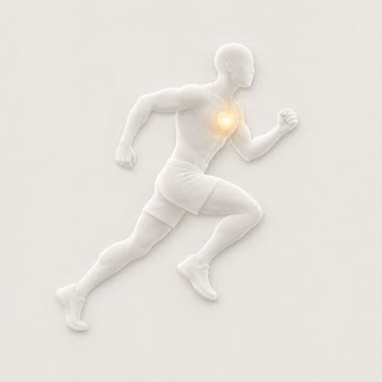
אירובי15 · 15 ראשי · 0 משני · 2 עם הדגמה- x210ריצהRunning
- x211הליכוןTreadmill
- x212הליכה בשיפועIncline Walk
- x213אופני כושרStationary Bike
- x214אופני התנגדותAssault Bike
- x215אליפטיקלElliptical
- x216מכונת חתירהRowing Machine
- x217סקי ארגSki Erg
- x218סטפרStair Climber
- x219קפיצה בחבלJump Ropeהדגמה
- x220ברפיBurpees
- x221קפיצה לקופסהBox Jumps
- x222דחיפת מזחלתSled Push
- x223חבלי קרבBattle Ropesהדגמה
- x224שחייהSwimming